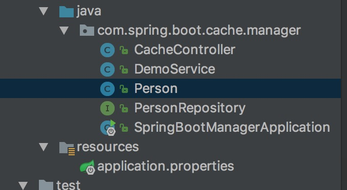
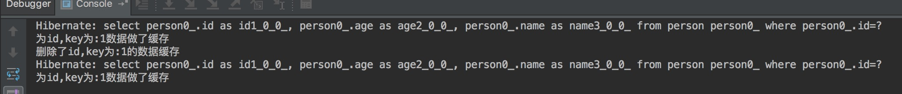

Spring Boot Cache
Spring定义了CacheManager和Cache接口来统一不同的缓存技术。其中CacheManager是spring提供的各种缓存技术抽象接口,Cache接口包含了缓存的各种操作(增加,删除,获取缓存),一般情况下不会直接和这个接口打交道.
Srping支持的CacheManager的列表如下：
|CacheManager|描述|
|:–:|:—:|
|SimpleCacheManager|使用简单的Collection来存储数据,主要用于测试用途|
|ConcurrentMapCacheManager|使用ConcurrentMap来存储缓存数据|
|NoOpCacheManager|仅用于测试,不会实际存储数据|
|EhCacheCacheManager|使用EhCache作为缓存技术|
|GuavaCacheManager|使用Google Guava作为缓存技术|
|HazelcastCacheManager|使用Hazelcast作为缓存技术|
|JCacheCacheManager|支持JCache的标准的实现作为缓存技术|
|RedisCacheManager|使用Redis作为缓存技术|
声明式缓存注解
Spring提供了4个注解来声明缓存规则,声明式注解如下:
| 注解 | 解释 |
|---|---|
| @Cacheable | 在执行方法之前,Spring会先查看缓存中是否有数据,如果有数据,则直接返回缓存数据,若没有,则调用方法,将数据查询出来后放进缓存 |
| @CachePut | 无论如何都会将方法的返回值放入到缓存中 |
| @CacheEvict | 将一条或则多条数据从缓存汇总删除 |
| @Caching | 可以通过@Caching注解组合多个注解策略在一个方法上 |
声明式注解使用时配置内容为:
# 可选generic,ehcache,hazelcast,infinispan,jcache,redis,simple,guava,none
spring.cache.type= simple
# 程序启动时常见缓存的名称
spring.cache.cache-names=person
# ehcache 配置文件地址,其他文件的配置内容差不多
# spring.cache.ehcache.config=application.properties
声明式缓存实例
例子是通过从接口传递过来的参数包装对象后插入到数据库中,同时又会缓存起来,下面在通过查询接口从数据库中根据主键查询这条数据,以及删除掉缓存以后再进行查询,整个过程中打印查询数据库的sql内容.具体的例子代码结构如下:

实体类对象
|
|
controller
|
|
数据库操作
|
|
service
|
|
运行结果说明
首先通过接口向数据库中插入一条数据,这条数据会缓存起来,然后在调用接口查询这条数据,会发现数据已经被缓存起来了,没有打印查询sql直接从缓存中将数据返回了,这个时候删除调用缓存,在通过查询接口将数据查询出来,查询的sql会被打印出来,也就是缓存中没有再去查询数据库。具体的执行结果截图如下：

由于数据被缓存了,进行数据查询时时通过aop切面进行操作的,如果缓存中有数据,方法体实际是不执行的,这里就没有打印第二步的操作。